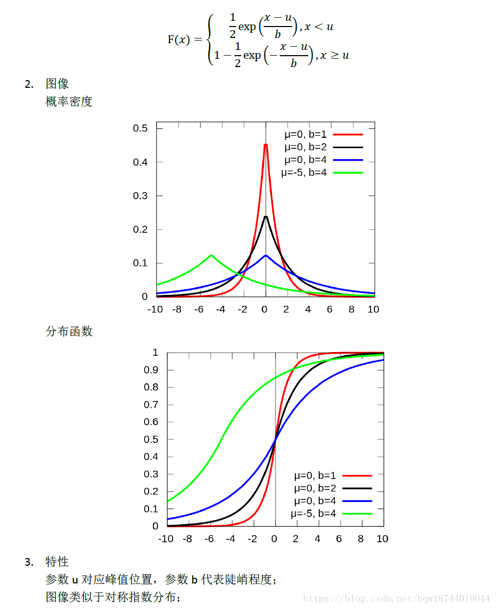

《Differential Privacy》阅读
Last Update:
Word Count:
Read Time:
Page View: loading...
前言
该文章主要注重数据库中的隐私保护。差分隐私主要应用于在数据库统计信息揭露的背景下——提供一组用户的准确统计信息，同时保护每个人的隐私。差分隐私要求一组数据的统计信息与任何个人是否选择加入或退出数据集无关。
数据库是一组行，每行包含一个人的数据。选择加入或退出数据库意味着最多只有一行不同的两个数据库，表示为，$D’$。一个数据库是另一个数据库的子集。
定义
严格差分隐私
一个随机函数 $\mathcal{K}$ ，使得其在两个相邻的数据集 $D$、$D’$ 上得到的任意相同输出集合S的概率满足
则称随机函数 $\mathcal{K}$ 满足 $\varepsilon - DP$ ，其中 $\varepsilon$ 被称为隐私预算，越小越能产生更强的隐私保证。
宽松差分隐私
一个随机函数 $\mathcal{K}$ ，使得其在两个相邻的数据集 $D$、$D’$ 上得到的任意相同输出集合S的概率满足
则称随机函数 $\mathcal{K}$ 满足 $(\varepsilon,\delta) - DP$ ，其中 $\varepsilon$ 被称为隐私预算，越小越能产生更强的隐私保证；$\delta$ 为松驰项，通常非常小，小于数据库大小的倒数。
函数的 $L_1$-敏感度
对于查询函数$f:\mathcal{D} \rightarrow R^d$，$L_1$ 敏感度是指：
$L_2$-敏感度与$L_1$-敏感度类似，使用$L_2$范式定义，常用于深度学习领域的差分隐私
特殊的，当d等于1时，查询函数的输出为1维数据，则 $f$ 的敏感度是指函数在相邻数据库上取值之差的最大值。
若$f$为数量查询，则$f(D)$是数据库中满足特定属性的行数，敏感度为1
若$f$是直方图查询，其中可能的数据库的行的范围被划分为某个数量为k的类，且$f(D)$是整数的k元组，用于指示$D$中K个类中每个类的行数。则$f$的敏感度也为1。（增加或删除一行只会导致一个类的行数减1，其他类的变化都为0）
拉普拉斯分布（Laplace）
概率密度：
标准Laplace：
期望为$\mu$，方差为$2b^2$
拆开绝对值是两个对称的指数分布

当$b = 1/\varepsilon$，x处的概率密度与$e^{-\varepsilon|x|}$成正比，且随着$\varepsilon$变小，分布更加平坦。由此得到下述定理
方案
对于函数$f: \mathcal{D} \rightarrow R^d$，将独立生成分布为$Lap(\Delta f/\varepsilon)$的噪声添加到d中每个输出项的机制享有$\varepsilon-DP$。
该噪声与数据库及其大小无关。
证明：
相当于在函数$f(x)$上添加一个噪声b，且b服从$\frac{\varepsilon}{2\Delta f}exp(-\frac{b\varepsilon}{\Delta f})$